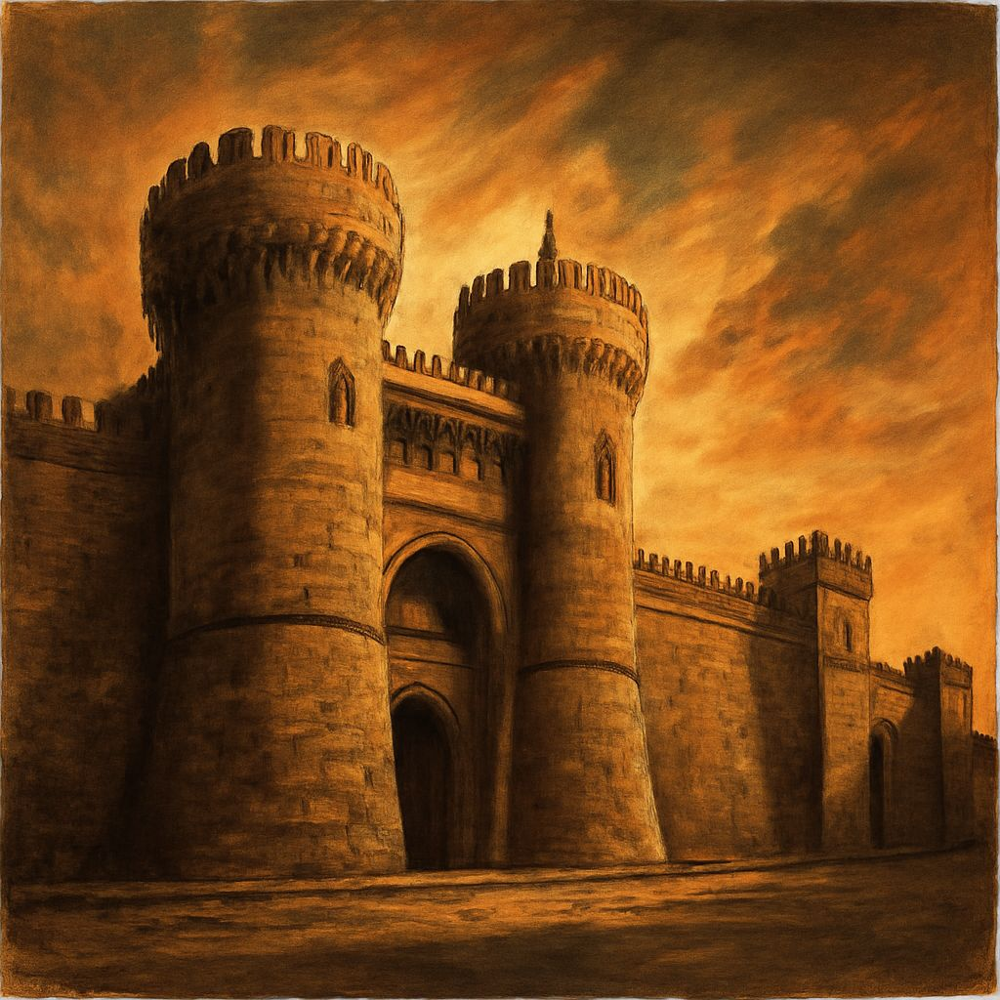
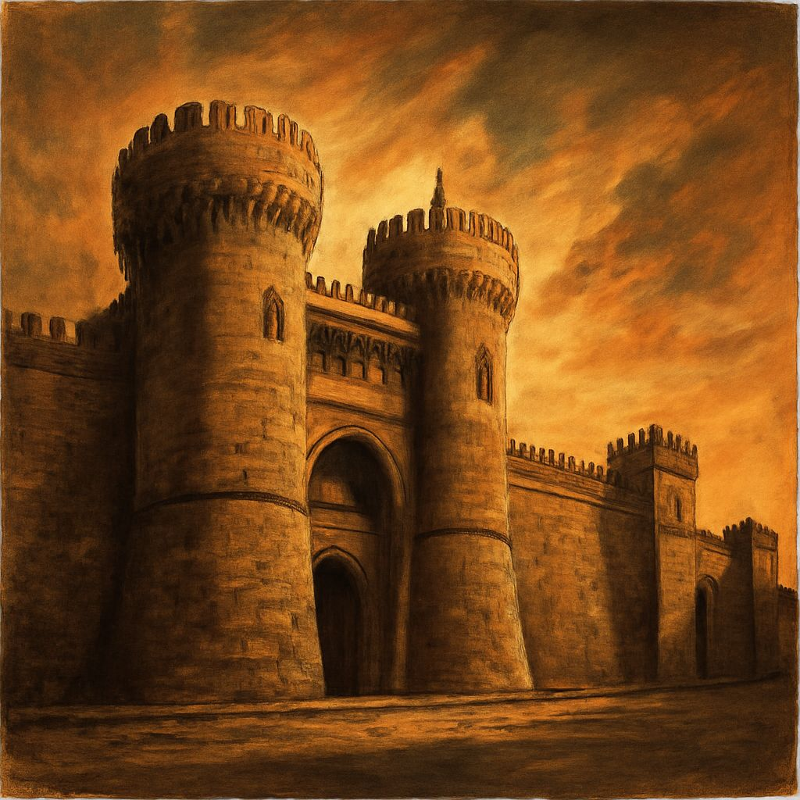

صلاح الدین ایوبی
یہ وہ نام ہے جو صلیبی جنگوں کے دور میں مسلمانوں کے لیے امید کی کرن بنا۔ ایک ایسا حکمران جس نے نہ صرف یروشلم کو آزاد کرایا بلکہ انصاف، رواداری اور انسانیت کی ایسی مثالیں قائم کیں جو آج بھی تاریخ کا حصہ ہیں۔ اس کی زندگی کا ہر لمحہ عزم، ہمت اور انصاف کی داستان ہے۔
ابتدائی زندگی
صلاح الدین ایوبی 1137 یا 1138 عیسوی میں موجودہ عراق کے شہر تکریت میں پیدا ہوئے۔ ان کا پورا نام یوسف بن ایوب تھا۔ ان کے والد نجم الدین ایوب اور چچا شیرکوہ دونوں ہی زنگی سلطنت میں اہم عہدوں پر فائز تھے۔ صلاح الدین کا خاندان کرد النسل تھا۔
بچپن سے ہی صلاح الدین میں قیادت کی صلاحیتیں نمایاں تھیں۔ انہوں نے ابتدائی تعلیم اپنے گھر پر ہی حاصل کی جہاں انہیں قرآن، حدیث، عربی ادب اور فقہ کی تعلیم دی گئی۔ ساتھ ہی انہوں نے جنگی فنون اور گھڑسواری کی تربیت بھی حاصل کی۔
نور الدین زنگی کے دربار میں
1152 میں صلاح الدین کا خاندان حلب چلا گیا جہاں ان کے والد نجم الدین ایوب نے نور الدین زنگی کی فوج میں اہم عہدہ سنبھالا۔ صلاح الدین نے نور الدین زنگی کے دربار میں تربیت حاصل کی اور اپنی صلاحیتوں کا لوہا منوایا۔
1164 میں صلاح الدین اپنے چچا شیرکوہ کے ساتھ مصر گئے جہاں فاطمی خلافت کے وزیر شاور نے انہیں مدد کے لیے بلایا تھا۔ مصر میں صلاح الدین نے اپنی جنگی مہارت اور سیاسی بصیرت کا مظاہرہ کیا۔ 1169 میں جب شیرکوہ کا انتقال ہوا تو صلاح الدین کو مصر کا وزیر مقرر کیا گیا۔
صلاح الدین نے مصر میں اپنی حکومت کو مستحکم کیا اور فاطمی خلافت کے خاتمے کے بعد ایوبی سلطنت کی بنیاد رکھی۔ انہوں نے مصر میں تعلیم، صحت اور دفاع کے شعبوں میں بڑے پیمانے پر اصلاحات نافذ کیں۔
یروشلم کی آزادی
صلاح الدین کا سب سے بڑا کارنامہ یروشلم کو صلیبیوں سے آزاد کرانا تھا۔ 1187 میں حطین کی جنگ میں انہوں نے صلیبیوں کو فیصلہ کن شکست دی۔ اس جنگ میں صلیبیوں کا بادشاہ گائے آف لوزیگنان بھی قیدی بنا لیا گیا۔
2 اکتوبر 1187 کو صلاح الدین نے یروشلم پر قبضہ کر لیا۔ یہ وہی شہر تھا جسے صلیبیوں نے 1099 میں فتح کیا تھا اور مسلمانوں اور یہودیوں کا قتل عام کیا تھا۔ لیکن صلاح الدین نے یروشلم فتح کرنے کے بعد انتقام لینے کے بجائے رواداری اور انسانیت کا مظاہرہ کیا۔
انہوں نے شہر کے عیسائیوں کو تحفظ دیا اور انہیں تاوان ادا کرنے پر آزادانہ طور پر شہر چھوڑنے کی اجازت دی۔ یہ رویہ صلیبیوں کے برعکس تھا جنہوں نے یروشلم فتح کرنے کے بعد بے پناہ خونریزی کی تھی۔
تیسری صلیبی جنگ
یروشلم کی آزادی کے بعد یورپ میں ہلچل مچ گئی۔ انگلینڈ کے رچرڈ اول (رچرڈ دی لائن ہارٹ)، فرانس کے فلپ دوم اور جرمنی کے فریڈرک باربروسا نے تیسری صلیبی جنگ کا اعلان کیا۔
1191 میں رچرڈ اول اور فلپ دوم عکہ پہنچے اور شہر پر قبضہ کر لیا۔ صلاح الدین اور رچرڈ کے درمیان کئی جنگیں ہوئیں جن میں دونوں طرف سے بہادری کے کارنامے دکھائے گئے۔ آرصور کی جنگ میں صلاح الدین نے رچرڈ کو شکست دی لیکن یافا کی جنگ میں رچرڈ نے صلاح الدین کی فوجوں کو پسپا کر دیا۔
آخرکار 2 ستمبر 1192 کو صلاح الدین اور رچرڈ اول کے درمیان معاہدہ راملا ہوا جس کے تحت یروشلم مسلمانوں کے پاس رہا لیکن عیسائی زائرین کو شہر میں آنے کی اجازت دی گئی۔
صلاح الدین کی شخصیت
صلاح الدین ایک عظیم سپہ سالار ہونے کے ساتھ ساتھ ایک عادل حکمران اور رحمدل انسان بھی تھے۔ ان کی شخصیت کے چند نمایاں پہلو:
- عدل و انصاف: صلاح الدین ہمیشہ انصاف کو ترجیح دیتے تھے۔ وہ عام لوگوں کے لیے بھی اور اپنے قریبی رشتہ داروں کے لیے بھی یکساں انصاف کرتے تھے۔
- رواداری: انہوں نے اپنی سلطنت میں عیسائیوں اور یہودیوں کو مکمل مذہبی آزادی دی۔
- سادگی: باوجود حکمران ہونے کے وہ سادہ زندگی گزارتے تھے۔ ان کے پاس ذاتی خزانہ نہیں تھا اور وہ اپنی ذاتی ضروریات کے لیے بھی بیت المال کا پیسہ استعمال نہیں کرتے تھے۔
- علم دوستی: انہوں نے مصر اور شام میں کئی مدارس، لائبریریاں اور ہسپتال تعمیر کروائے۔
آخری ایام اور وفات
صلاح الدین نے اپنی زندگی کے آخری سال دمشق میں گزارے۔ تیسری صلیبی جنگ کے بعد ان کی صحت بتدریج خراب ہوتی گئی۔ 4 مارچ 1193 کو وہ بخار میں مبتلا ہوئے جو روز بروز بڑھتا گیا۔
19 مارچ 1193 کو صلاح الدین ایوبی نے 55 یا 56 سال کی عمر میں دمشق میں وفات پائی۔ ان کے پاس کوئی ذاتی دولت نہیں تھی، حتیٰ کہ ان کے جنازے کے لیے بھی رقم بیت المال سے لی گئی۔
صلاح الدین کو دمشق میں امیہ مسجد کے قریب دفن کیا گیا۔ آج بھی ان کا مزار دمشق کے اہم تاریخی مقامات میں سے ایک ہے جہاں ہر سال ہزاروں زائرین آتے ہیں۔
ان کی وفات کے بعد ان کے بیٹوں میں سلطنت تقسیم ہو گئی جس سے ایوبی سلطنت کمزور پڑ گئی۔ لیکن صلاح الدین کی میراث آج بھی زندہ ہے اور وہ مسلمانوں کے لیے ایک مثالی حکمران کی حیثیت سے یاد کیے جاتے ہیں۔
صلاح الدین کی میراث
صلاح الدین ایوبی نے نہ صرف ایک عظیم سلطنت قائم کی بلکہ انہوں نے انسانی اقدار اور اسلامی اصولوں کی ایسی مثالیں قائم کیں جو آج بھی قابل تقلید ہیں:
- یروشلم کی آزادی: انہوں نے 88 سال بعد یروشلم کو صلیبیوں سے آزاد کرایا۔
- رواداری کی مثال: انہوں نے مفتوحہ علاقوں میں عیسائیوں اور یہودیوں کے ساتھ حسن سلوک کیا۔
- تعلیمی ادارے: انہوں نے مصر اور شام میں کئی مدارس اور لائبریریاں قائم کیں۔
- عسکری نظا: انہوں نے ایک منظم اور مضبوط فوجی نظام قائم کیا۔
- ثقافتی تبادلہ: ان کے دور میں مشرق و مغرب کے درمیان علمی اور ثقافتی تبادلہ ہوا۔
آج بھی صلاح الدین کو مشرق و مغرب دونوں میں احترام کی نظر سے دیکھا جاتا ہے۔ یورپی مورخین بھی ان کی بہادری، انصاف پسندی اور انسان دوستی کے معترف ہیں۔
کیا آپ صلاح الدین ایوبی کے بارے میں مزید جاننا چاہتے ہیں؟
صلاح الدین ایوبی کی تصاویر

 
